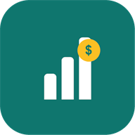
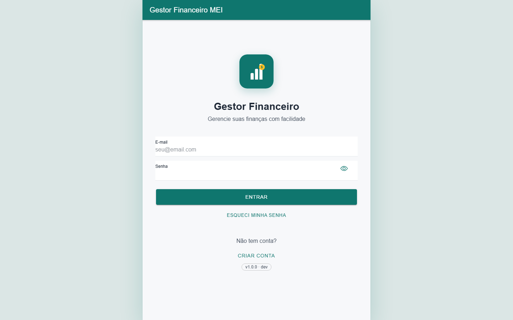
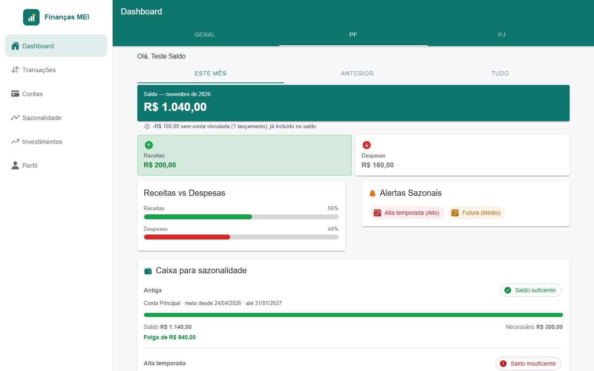
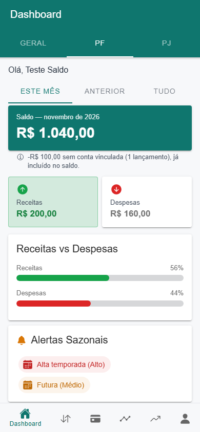
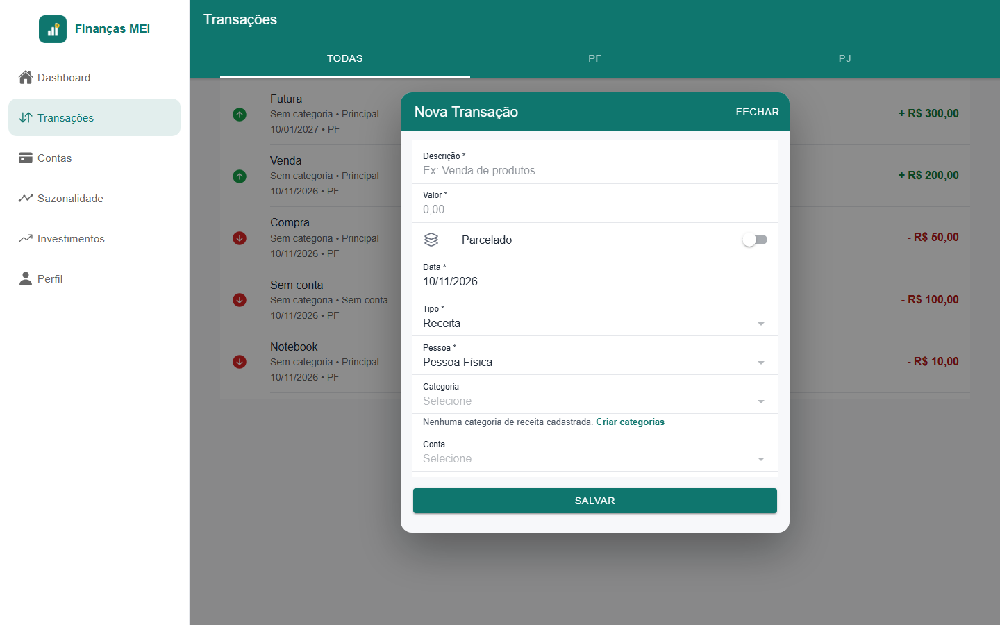

O Finanças MEI é um gestor financeiro para microempreendedores individuais. Ele reúne em um só lugar o que entra e o que sai do seu dinheiro, separando a vida pessoal (PF, pessoa física) da empresa (PJ, pessoa jurídica), e ajuda a se preparar para os meses de vendas fracas.
Abra https://financasmei.app.br. Em telas largas (computador) o menu fica à esquerda; em telas menores as abas ficam na parte de baixo.

Informe e-mail e senha. No aplicativo, depois do primeiro login, você pode ativar a entrada por biometria (digital ou rosto), descrita na seção 9.

É a tela inicial. De cima para baixo:
| Item | O que mostra |
|---|---|
| Geral / PF / PJ | Filtra tudo pelo tipo de pessoa. Só aparece se o seu perfil for Ambos; quem usa apenas PF ou apenas PJ vê direto os seus dados. |
| Este mês / Anterior / Tudo | Período do resumo. |
| Personalizado | Escolha Dia para ver um dia específico, ou Período para informar uma data inicial e uma final. O saldo, as receitas, as despesas e as últimas transações passam a considerar só esse intervalo. |
| Saldo | Receitas menos despesas do período, já considerando lançamentos sem conta. Mostra só o que já aconteceu até hoje. |
| Receitas e Despesas | Totais do período. O cartão que supera o outro ganha destaque. |
| Receitas vs Despesas | Barras com a proporção de cada um. |
| Alertas sazonais | Períodos de sazonalidade ativos agora, com o nível de impacto. |
| Caixa para sazonalidade | Compara o saldo da conta escolhida com o caixa necessário (seção 7). |
| Últimas transações | Os lançamentos mais recentes. |
No celular, puxe a tela para baixo para atualizar os dados.


Na aba Transações estão todos os lançamentos. Se o seu perfil for Ambos, use as abas Todas / PF / PJ para filtrar.
Toque na transação para editar; na tela de edição há o botão Excluir transação. Também dá para deslizar o item para o lado e tocar no ícone de lixeira.
Cadastre cada conta que você usa para acompanhar o saldo atual dela.
| Campo | Descrição |
|---|---|
| Nome da conta * | Como você quer chamá-la (ex.: Principal, Caixa da loja). |
| Instituição financeira | Banco ou carteira digital. |
| Número da conta | Opcional. |
| Tipo * | Conta Corrente, Poupança ou Caixa. |
| Vínculo * | Se a conta é PF ou PJ. Cada tipo tem um ícone diferente na lista. O campo só aparece para quem tem perfil Ambos; nos demais casos a conta já fica vinculada ao seu perfil. |
| Saldo inicial * | Quanto havia na conta quando você começou a usar o app. Ele é somado ao saldo atual. |
O saldo atual de cada conta é o saldo inicial mais as receitas e menos as despesas lançadas nela, até hoje. Com perfil Ambos, use o filtro Todas / PF / PJ no topo da lista.
Todo negócio tem épocas boas e ruins. Aqui você cadastra esses períodos e, se quiser, define quanto dinheiro precisa ter guardado antes deles começarem.
A partir da data escolhida e até o fim do período, o Dashboard mostra o cartão Caixa para sazonalidade, comparando o saldo da conta com o valor necessário:
Um caderno de ideias para o dinheiro que sobra. Cada ideia tem: Título *, Descrição, Valor estimado (R$), Retorno estimado (%), Prioridade * e Status *. A prioridade pode ser Alta, Média ou Baixa; o status acompanha a ideia: Ideia, Em Análise, Aprovado ou Descartado.
Na aba Aprovados, cada ideia tem o botão Lançar em transações. Ele abre uma nova transação (do tipo Despesa) já com a descrição e o valor da ideia preenchidos; é só conferir a data, a categoria e a conta e salvar.
| Opção | O que faz |
|---|---|
| Editar Perfil | Altera seus dados cadastrais. O tipo de perfil (PF, PJ ou Ambos) define o que o app mostra: quem é só PF ou só PJ não vê as abas e campos de vínculo. |
| Categorias | Cria e organiza as categorias de receitas e despesas. |
| Interface inicial | Escolhe o que aparece primeiro: PF, PJ ou Ambos. |
| Entrar com biometria | No aplicativo, ativa o desbloqueio por digital ou rosto nos próximos acessos. Se o aparelho não tiver biometria cadastrada, a opção não funciona. |
| Tema | Claro, Escuro ou Automático (acompanha o aparelho). |
| Sair | Botão no fim da tela de Perfil; encerra a sessão neste aparelho. |
Confira o saldo inicial cadastrado e se todas as transações foram vinculadas à conta certa. Lançamentos com data futura só entram no saldo quando a data chegar.
Verifique o spam e se digitou o e-mail correto. Aguarde alguns minutos antes de pedir outro.
Nos formulários, a barra de abas some enquanto o painel está aberto, para o teclado não cobrir os campos nem o botão Salvar. Ela volta ao fechar o formulário.
Sim. Os dados ficam na sua conta e aparecem nos dois.
Permita a instalação de fontes desconhecidas para o navegador que baixou o arquivo e tente de novo.
A conexão é protegida por HTTPS e a sua senha é guardada de forma criptografada. Veja os Termos de Uso dentro do app para detalhes.
Finanças MEI · versão 1.1.0 · financasmei.app.br